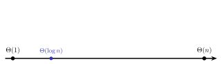
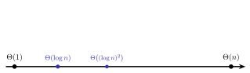
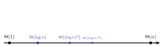
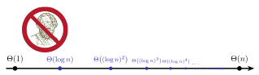

Informatique et Calcul Scientifique
Cours 8
Correctitude d’algorithmes
Invariant de boucle
Variant de boucle
Invariant de boucle
Au dernier cours, on a vu qu’un algorithme doit avant tout être correct : produire la bonne sortie pour toute instance du problème. Le tester sur quelques instances ne suffit donc pas.
Comment se convaincre qu’un algorithme calcule bien ce qu’il est censé calculer ?
- Pour un algorithme sans boucles, c’est assez simple.
- Pour un algorithme contenant des boucles
whileoufor, c’est plus compliqué ! - On formule et on prouve un invariant de boucle : une propriété qui est valide au début de chaque itération de la boucle et dont la validité à la sortie de la boucle prouve qu’elle calcule bien la bonne valeur.
Invariant de boucle
L’utilisation d’un invariant de boucle pour prouver la correctitude d’un programme se fait en trois étapes :
- Initialisation : Prouver que l’invariant de boucle est vrai avant la première itération de la boucle
- Maintenance : Prouver que si l’invariant de boucle est vrai pour une itération de la boucle, alors il est vrai pour la prochaine itération de la boucle
(Avec ces deux étapes, on a prouvé que l’invariant reste vrai à toutes les itérations de la boucle.)
- Terminaison : Si l’invariant de boucle est vrai à la sortie de la boucle, on en déduit (directement ou indirectement) la correctitude du programme.
Problème 1 : calculer une série géométrique
Problème : pour un réel \(a\) et un entier \(n \geq 0\) en entrée, écrire un algorithme (sous forme de fonction Python) qui retourne
\[\sum_{k=0}^{n-1} a^k = 1 + a + a^2 + \cdots + a^{n-1}.\]
Série géométrique : invariant de boucle
Série géométrique : preuve (initialisation)
Invariant de boucle : Au début de la \(i\)ème itération de la boucle for, \(s\) contient la valeur \[\sum_{k=0}^{i-1} a^k = 1 + a + \cdots + a^{i-1}.\]
- Initialisation : Avant le début de la boucle
for, \(s = 0\), ce qui correspond bien à la somme vide.
Remarque. Une somme de la forme \(\sum_{k=i}^{j} \ldots\) avec \(j < i\) est dite vide et vaut \(0\).
Série géométrique : preuve (maintenance)
Invariant de boucle : Au début de la \(i\)ème itération de la boucle for, \(s\) contient la valeur \[\sum_{k=0}^{i-1} a^k = 1 + a + \cdots + a^{i-1}.\]
- Maintenance : On suppose qu’au début de la \(i\)ème itération, on a \(s = \sum_{k=0}^{i-1} a^k\). Or la \(i\)ème itération consiste à exécuter l’instruction
s = s * a + 1. La valeur de \(s\) devient donc \[(1 + a + \cdots + a^{i-1})a + 1 = (a + a^2 + \cdots + a^{i}) + 1 = \sum_{k=0}^{i} a^k\] à la fin de la \(i\)ème itération (et au début de la \((i+1)\)ème).
Série géométrique : preuve (terminaison)
Invariant de boucle : Au début de la \(i\)ème itération de la boucle for, \(s\) contient la valeur \[\sum_{k=0}^{i-1} a^k = 1 + a + \cdots + a^{i-1}.\]
- Terminaison : À la sortie de la boucle (c.-à-d. au début de la « \(n\) »ème itération, qui n’aura pas lieu), on a \(s = \sum_{k=0}^{n-1} a^k\), ce qui est exactement ce que la boucle prétend calculer.
Problème 2 : calculer un maximum
Problème : étant donné une liste non vide de nombres réels, calculer le maximum.
Reprenons l’algorithme du dernier cours :
def maximum(L):
n = len(L)
le_max = L[0]
for i in range(1, n):
if L[i] > le_max:
le_max = L[i]
return le_maxProuvons que cet algorithme calcule bien le maximum !
Invariant de boucle : Au début de la \(i\)ème itération de la boucle for, le_max est le maximum de L[0], …, L[i-1].
Maximum : preuve
Invariant de boucle : Au début de la \(i\)ème itération de la boucle for, le_max est le maximum de L[0], …, L[i-1].
- Initialisation : Avant le début de la boucle
for, donc au début de l’itérationi = 1,le_maxest égal àL[0], qui est bien le maximum du seul élémentL[0].
- Maintenance : Supposons l’invariant vrai au début de la \(i\)ème itération.
- Si
L[i] > le_max, alorsle_maxprend la valeurL[i], qui est strictement plus grand que tous les éléments précédents. - Sinon,
le_maxne change pas, et il est supérieur ou égal àL[i].
le_maxest le maximum deL[0], …,L[i]. - Si
- Terminaison : À la sortie de la boucle (c’est-à-dire au début de l’itération
i = n, qui n’aura pas lieu),le_maxest le maximum deL[0], …,L[n-1], donc de la liste entière.
Condition de terminaison
- Une boucle
forsur unrangefait un nombre d’itérations fixé à l’avance : elle termine toujours. - Si l’algorithme contient une boucle
while, il faut prouver que l’algorithme termine. - Pour cela, on définit en général une expression (un variant de boucle)
- qui croît ou décroît strictement en fonction du nombre d’itérations
- telle que la boucle termine lorsque l’expression atteint une certaine valeur.
Problème 3 : calculer le PGCD
- Étant donné deux entiers \(a\) et \(b\) strictement positifs, on veut calculer leur plus grand commun diviseur (pgcd).
- \(\operatorname{pgcd}(3060,924) = \operatorname{pgcd}(2^2\cdot3^2\cdot5\cdot17\, ,\, 2^2\cdot3\cdot7\cdot11) = 2^2\cdot3 = 12\).
- Trouver la factorisation en nombres premiers d’un très grand nombre est un problème qu’on conjecture (et qu’on espère) très difficile.
- L’algorithme d’Euclide, beaucoup plus simple, se base sur une propriété importante : \[\operatorname{pgcd}(a,b) = \operatorname{pgcd}(b, a\bmod b). \tag{$\ast$}\]
Rappel : \(a \bmod b\) est le reste de la division euclidienne de \(a\) par \(b\).
En Python : a % b.
Preuve que \(\operatorname{pgcd}(a,b) = \operatorname{pgcd}(b, a\bmod b)\)
Preuve :
- On écrit la division entière de \(a\) par \(b\) comme \[a = bq + \color{red}{(a \bmod b)}, \qquad a = bq + \color{red}{r}, \qquad 0 \leq r < b.\]
- Cette équation montre immédiatement qu’un diviseur de \(b\) et \(r\) divise aussi
\(a\) (et \(b\)). - En réorganisant cette équation en \[r = a - bq\] on voit aussi qu’un diviseur de \(a\) et \(b\) divise également \(r\) (et \(b\)).
- Par conséquent, \(a\) et \(b\) ont exactement les mêmes diviseurs communs que \(b\) et \(r\). Leur \(\operatorname{pgcd}\) est donc le même. \(\blacksquare\)
Algorithme d’Euclide : terminaison
On peut utiliser ce fait pour créer un algorithme.
Pourquoi cet algorithme termine-t-il ?
- \(k\) décroît d’au moins \(1\) à chaque itération de la boucle
while(\(i \bmod k < k\) et ce sont des entiers). - La boucle se termine lorsque \(k\) (initialement \(> 0\)) atteint une valeur \(\leq 0\).
- \(k\) est donc un variant de boucle, ce qui prouve que l’algorithme termine.
- \(k\) décroît d’au moins \(1\) à chaque itération de la boucle
Algorithme d’Euclide : correctitude
Pourquoi cet algorithme rend-il une valeur correcte ?
- L’égalité \(\operatorname{pgcd}(a,b) = \operatorname{pgcd}(b, a\bmod b)\) implique l’invariant de boucle :
À chaque itération de la boucle, \(\operatorname{pgcd}(i, k) = \operatorname{pgcd}(a, b)\).
- Au moment où l’algorithme retourne la valeur \(i\) :
- \(k\) vaut \(0\) (\(k\) étant le reste d’une division entière, il n’est jamais strictement négatif)
- La valeur rendue \(i = \operatorname{pgcd}(i, 0) = \operatorname{pgcd}(i, k)\).
- Pour \(a, b\) entiers strictement positifs en entrée, l’algorithme retourne donc bien \(\operatorname{pgcd}(a,b)\).
Algorithme d’Euclide : exemples
\[\begin{aligned} \operatorname{pgcd}(3060,924) &= \operatorname{pgcd}(924,288) \\ &= \operatorname{pgcd}(288,60) \\ &= \operatorname{pgcd}(60, 48) \\ &= \operatorname{pgcd}(48, 12) \\ &= \operatorname{pgcd}(12, 0) = 12. \end{aligned}\]
\[\begin{aligned} \operatorname{pgcd}(2437, 181) &= \operatorname{pgcd}(181, 84) \\ &= \operatorname{pgcd}(84, 13) \\ &= \operatorname{pgcd}(13, 6) \\ &= \operatorname{pgcd}(6, 1) \\ &= \operatorname{pgcd}(1, 0) = 1. \end{aligned}\]
Recherche dans une liste
Recherche linéaire et recherche binaire
Problème : recherche dans une liste
Étant donnés une liste L de nombres et un nombre x, trouver x dans L.
- Retourner un indice
itel queL[i] == xsixapparaît dansL - Sinon retourner
None

- Sans utiliser
L.index(x), dont on ne connaît pas la complexité !
Recherche linéaire
Idée : parcourir la liste du début à la fin, et s’arrêter dès qu’on trouve x.
Recherche linéaire : correctitude
- Si
r_linretournei, alorsL[i] == x: c’est le test fait juste avant. - Si
r_linretourneNone, il faut prouver quexn’est pas dansL.
Invariant de boucle : Au début de la \(i\)ème itération de la boucle for, x n’est aucun des éléments L[0], …, L[i-1].
- Initialisation : Au début de l’itération
i = 0, il n’y a encore aucun élément à examiner. - Maintenance : Supposons l’invariant vrai au début de la \(i\)ème itération. Si
L[i] == x, la fonction retournei. Sinon,xn’est aucun des élémentsL[0], …,L[i]au début de la prochaine itération. - Terminaison : À la sortie de la boucle (c’est-à-dire au début de l’itération
i = n, qui n’aura pas lieu),xn’est aucun des élémentsL[0], …,L[n-1]: il n’est pas dansL.
Recherche linéaire : complexité
- Si
xest au début deL, une seule itération suffit. Mais dans le pire des cas (quandxest à la fin deL, ou n’y est pas), la boucle faitlen(L) = nitérations. r_lina donc une complexité \(\Theta(n)\).

Peut-on faire mieux ?
- Pour une liste quelconque, non : dans le pire des cas, il faut lire toute la liste. Comme au dernier cours, tout algorithme a donc un temps de parcours \(\Omega(n)\), et
r_linest asymptotiquement optimal.
- Et si la liste était triée ?
- Par analogie, quand on cherche dans un dictionnaire on ne lit pas page par page !
- On ouvre au milieu, on regarde si le mot cherché est avant ou après, et on recommence sur la moitié qui le contient.
Recherche de 17 : étape 1 \[[-7, -3, -1, 0, 1, 2, 5, 6, 8, 9, 13, 17, 18, 24, 26, 27, 32, 38, 47, 51]\] Milieu : 9. Comme \(17 > 9\), on cherche dans la moitié droite.
Recherche de 17 : étape 1 \[[-7, -3, -1, 0, 1, 2, 5, 6, 8, {\color{goldenrod}{\mathbf{9}}}, 13, 17, 18, 24, 26, 27, 32, 38, 47, 51]\] Milieu : 9. Comme \(17 > 9\), on cherche dans la moitié droite.
Recherche de 17 : étape 2 \[[{\color{gray}{-7, -3, -1, 0, 1, 2, 5, 6, 8, 9,}}\; 13, 17, 18, 24, {\color{goldenrod}{\mathbf{26}}}, 27, 32, 38, 47, 51]\] Milieu : 26. Comme \(17 < 26\), on cherche à gauche.
Recherche de 17 : trouvé ! \[[{\color{gray}{-7, -3, -1, 0, 1, 2, 5, 6, 8, 9,}}\; 13, {\color{goldenrod}{\mathbf{17}}}, 18, 24, {\color{gray}{26, 27, 32, 38, 47, 51}}]\] Milieu : 17. Trouvé ! Seulement 3 étapes (au lieu de 12).
Recherche de 31 : étape 1 \[[-7, -3, -1, 0, 1, 2, 5, 6, 8, {\color{goldenrod}{\mathbf{9}}}, 13, 17, 18, 24, 26, 27, 32, 38, 47, 51]\] Milieu : 9. Comme \(31 > 9\), on cherche à droite.
Recherche de 31 : étape 2 \[[{\color{gray}{-7, -3, -1, 0, 1, 2, 5, 6, 8, 9,}}\; 13, 17, 18, 24, {\color{goldenrod}{\mathbf{26}}}, 27, 32, 38, 47, 51]\] Milieu : 26. Comme \(31 > 26\), on cherche à droite.
Recherche de 31 : étape 3 \[[{\color{gray}{-7, -3, -1, 0, 1, 2, 5, 6, 8, 9, 13, 17, 18, 24, 26,}}\; 27, 32, {\color{goldenrod}{\mathbf{38}}}, 47, 51]\] Milieu : 38. Comme \(31 < 38\), on cherche à gauche.
Recherche de 31 : étape 4 \[[{\color{gray}{-7, -3, -1, 0, 1, 2, 5, 6, 8, 9, 13, 17, 18, 24, 26,}}\; {\color{goldenrod}{\mathbf{27}}}, 32, {\color{gray}{38, 47, 51}}]\] Milieu : 27. Comme \(31 > 27\), on cherche à droite.
Recherche de 31 : pas trouvé ! \[[{\color{gray}{-7, -3, -1, 0, 1, 2, 5, 6, 8, 9, 13, 17, 18, 24, 26, 27,}}\; {\color{goldenrod}{\mathbf{32}}}, {\color{gray}{38, 47, 51}}]\] \(32 \neq 31\). Pas trouvé ! Seulement 5 étapes (au lieu de 20).
Remarque. Cette méthode s’appelle la recherche binaire (ou recherche dichotomique).
Recherche binaire
Entrée : une liste L de nombres, triée par ordre croissant, et un nombre x.
Recherche binaire : correctitude
Comme on a une boucle while, on doit vérifier que l’algorithme se termine (via un variant de boucle) et qu’il répond correctement (via un invariant de boucle).
Variant de boucle :
haut - bas
- Au début,
haut - basest positif (ou alors on ne rentre pas dans la boucle). - À chaque itération de la boucle,
haut - basdécroît d’au moins 1 (ou on sort de la boucle). - La boucle termine lorsque
haut - bas < 0.
Recherche binaire : correctitude
Invariant de boucle :
Si x est dans L, alors il est parmi L[bas], …, L[haut].
- Initialisation : Vrai au départ, car
bas = 0ethaut = n - 1: ce sont tous les éléments deL. - Maintenance : Supposons l’invariant vrai au début d’une itération, et
L[milieu]différent dex(sinon, la fonction retournemilieu).
- Si
L[milieu] > x: commeLest triée,L[milieu], …,L[haut]sont tous strictement plus grands quex. Sixest dansL, il est donc parmiL[bas], …,L[milieu-1]: l’invariant reste vrai aprèshaut = milieu - 1. - Sinon,
L[milieu] < x: de même,L[bas], …,L[milieu]sont tous strictement plus petits quex, et l’invariant reste vrai aprèsbas = milieu + 1.
Recherche binaire : correctitude
Invariant de boucle :
Si x est dans L, alors il est parmi L[bas], …, L[haut].
- Terminaison : La boucle peut se terminer de deux manières.
- Si la fonction retourne
milieu, alors clairementL[milieu] == x. - Si la fonction retourne
None, c’est qu’on est sorti de la boucle avechaut < bas: il ne reste aucun élément entrebasethaut. D’après l’invariant de boucle,xn’est donc pas dansL.
Recherche binaire : complexité
- Chaque itération de la boucle
whileprend un temps constant. - La taille de la sous-liste considérée est à peu près coupée en deux à chaque itération.
- L’algorithme s’arrête lorsqu’on arrive à une sous-liste de taille \(\leq 1\).
Combien de fois faut-il diviser un entier \(n\) par 2
pour arriver jusqu’à 1 ?
Introduction à \(\log_2\)
Soit \(n\) un entier strictement positif. Dans ce cours, \(\log_2(n)\) est le nombre de fois qu’il faut diviser \(n\) par 2 (division entière) pour arriver à un nombre \(\leq 1\).
| \(n\) | 1 | 2 | \(\color{red}{5}\) | 8 | 16 | 32 | 64 | \(\color{red}{100}\) | 256 | 512 | \(\color{red}{1000}\) |
|---|---|---|---|---|---|---|---|---|---|---|---|
| \(\log_2(n)\) | 0 | 1 | \(\color{red}{2}\) | 3 | 4 | 5 | 6 | \(\color{red}{6}\) | 8 | 9 | \(\color{red}{9}\) |
- Ce n’est pas la définition mathématique standard de \(\log_2\) ; par exemple, on a habituellement \[ \log_2(5) = 2{,}32192809489\ldots \neq 2. \] Cependant, notre valeur de \(\log_2\) ne s’éloigne jamais de plus de 1 de la valeur standard, et comme on s’intéresse uniquement à la classe de complexité \(\Theta(\log n)\), cela ne change rien.
- On peut aussi considérer \(\log_a(n)\), c’est-à-dire le nombre de fois qu’il faut diviser par \(a\) pour arriver à un nombre \(\leq 1\). Comme \(\log_a(n) \approx \log_2(n) / \log_2(a)\), changer de base revient à multiplier par une constante, ce qui ne change pas la classe de complexité \(\Theta(\log n)\).
Comportement de \(\log_2\) à l’infini
\(\log_2(n)\) croît vers l’infini quand \(n \to \infty\), mais beaucoup plus lentement que \(n\) :
| \(n\) | \(\log_2(n)\) |
|---|---|
| \(1\,024\) | 10 |
| \(1\,048\,576\) | 20 |
| \(1\,073\,741\,824\) | 30 |
| \(1{,}1 \times 10^{12}\) | 40 |






Recherche binaire : complexité (suite)
- À chaque itération, la taille de la sous-liste de nombres où
xpourrait encore se trouver est divisée par \(\sim 2\). - Nombre d’itérations \(\approx \log_2(n)\) dans le pire des cas (quand
xn’est pas dansL). r_bina donc une complexité \(\Theta(\log n)\).

Nombre d’itérations, dans le pire des cas :
| \(n\) | r_lin |
r_bin |
|---|---|---|
| \(10^{3}\) | \(1\,000\) | \(\approx 10\) |
| \(10^{6}\) | \(1\,000\,000\) | \(\approx 20\) |
| \(10^{9}\) | \(1\,000\,000\,000\) | \(\approx 30\) |
Motivation pour le tri
- La recherche binaire nécessite une liste triée.
- Comment trier une liste efficacement ?
\(\Rightarrow\) Prochain cours.